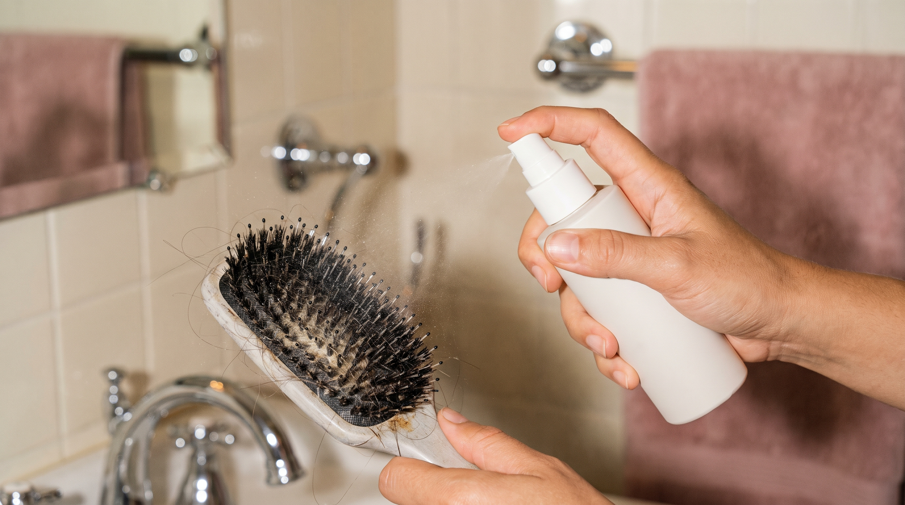
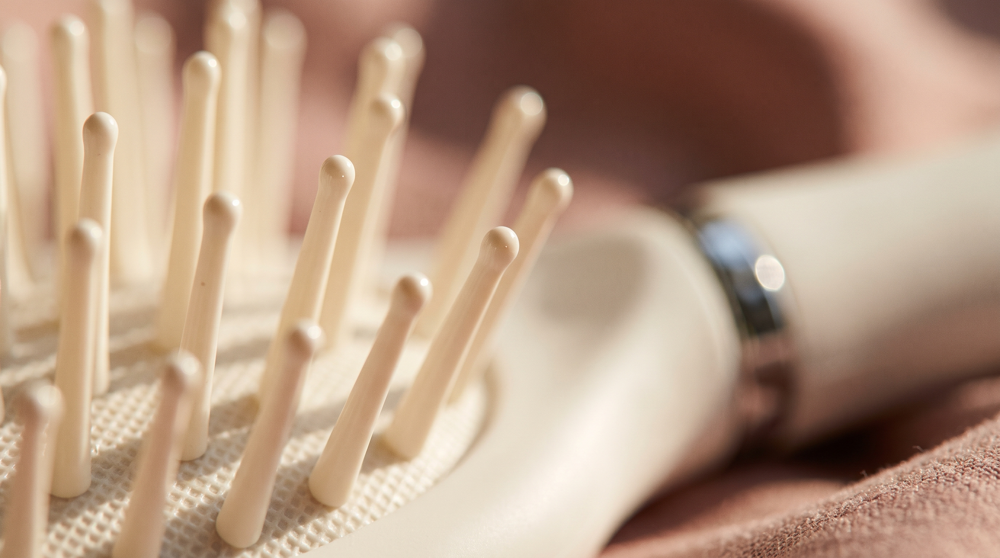
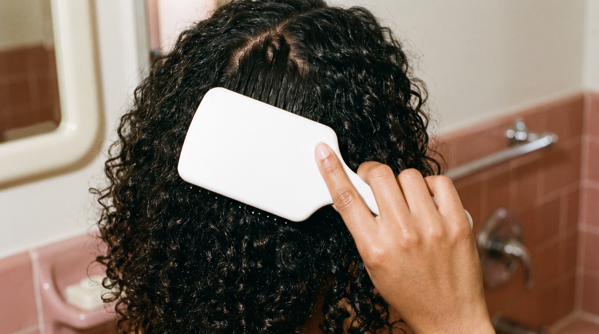
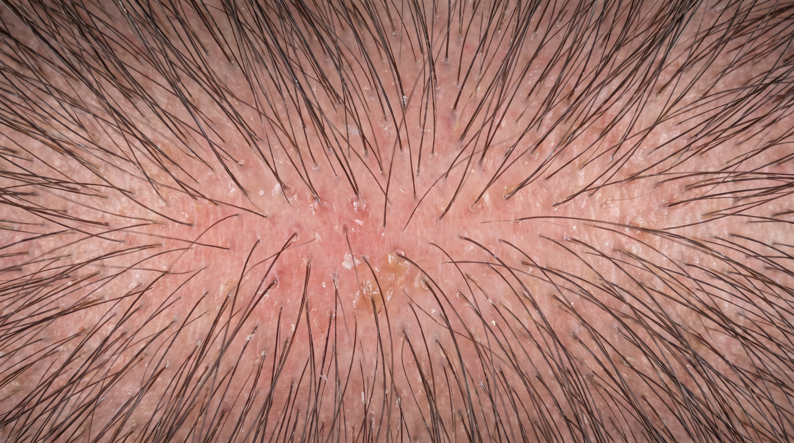

Routines cheveux bouclés, hygiène de la brosse et petits gestes qui changent tout. Des conseils clairs, sans blabla.

Bactéries, sébum, résidus : votre brosse en accumule plus que vous ne le pensez. La méthode complète pour des cheveux vraiment sains.

Une fois par semaine, par mois ? La fréquence idéale selon vos cheveux, et les signes qui montrent qu'il est temps.

Vos racines regraissent dès le lendemain du shampoing ? Le coupable qu'on ne soupçonne jamais — et le réflexe qui change tout.

Picots tordus, coussin déformé, odeur tenace : les signes qu'il faut la remplacer, avant qu'elle n'abîme vos cheveux.

Le geste qu'on repousse toujours à plus tard. La méthode la plus rapide pour libérer votre brosse, sans l'abîmer.

Vinaigre, bicarbonate, savon doux : la méthode naturelle pour désinfecter votre brosse en profondeur.

Sébum, cellules mortes, résidus : ce que les bactéries accumulées provoquent réellement, et comment limiter leur prolifération.

Une odeur désagréable n'est jamais anodine. Les causes réelles et la méthode pour l'éliminer durablement.

Une brosse mal entretenue peut aggraver les pellicules sans en être la cause première. Comprendre le lien réel.

Une brosse sale ne se contente pas d'être inesthétique : elle affecte directement la santé de vos cheveux.

Brosser son cuir chevelu stimule la circulation, à condition d'éviter certaines erreurs courantes.
Brosser des cheveux bouclés demande une technique différente. La méthode pour démêler sans casser.